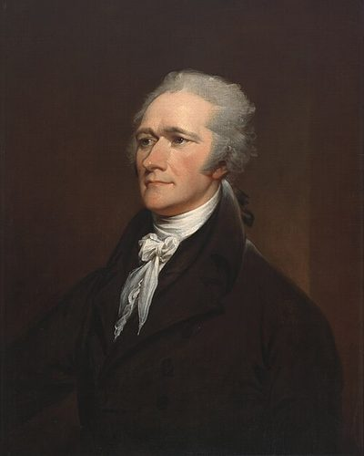

Ideologies / Conservative
What is Hamiltonianism?
Hamiltonianism is a political ideology in the Conservative family. Hamilton argued to Congress that a nation of farmers alone would stay poor and dependent. Manufacturing extends the division of labour, brings machinery into use, attracts immigrants and gives farmers a home market. Because new industries cannot at first compete with established foreign ones, the federal government should foster them with protective duties, bounties and better roads and canals. Economic independence, above all in military supplies, is a condition of national security.
A strong national government that builds national industry.
Defined from: Alexander Hamilton, Report on the Subject of Manufactures (1791)
See how close you are to Hamiltonianism Dare a friend to answer as one

.jpg){kind=link}
Where Hamiltonianism stands on 13 axes
Each axis runs from 0 to 100. A score of 50 is the middle. On a classic compass it sits in the Authoritarian Right quadrant.
| Axis | Position | Score | In words |
|---|---|---|---|
| EconomyMarket to Planned | 45 | Balanced | |
| OwnershipPrivate to Collective | 15 | Very strongly Private | |
| RightsLiberty to Security | 55 | Balanced | |
| GovernmentDemocracy to Autocracy | 45 | Balanced | |
| StructureDecentralised to Centralised | 85 | Very strongly Centralised | |
| NationInternationalist to Nationalist | 75 | Strongly Nationalist | |
| ImmigrationMulticulturalist to Assimilationist | 60 | Leans Assimilationist | |
| ValuesProgressive to Traditional | 55 | Balanced | |
| TechnologyAccelerationist to Precautionary | 20 | Strongly Accelerationist | |
| EnvironmentIndustrialist to Environmentalist | 10 | Very strongly Industrialist | |
| ReligionSecular to Religious | 45 | Balanced | |
| MilitaryPacifist to Militarist | 65 | Leans Militarist | |
| TradeFree Trade to Protectionist | 90 | Very strongly Protectionist |
Ideologies closest to Hamiltonianism
- Economic Nationalism88% alike
- Bolivarianism87% alike
- Gaullism85% alike
- Garveyism82% alike
- Peronism (Justicialism)81% alike
Its opposite on this map is Tolstoyan Anarcho Pacifism, at 30%.
Parties near Hamiltonianism
Federalist Party (United States) was the first party or movement to carry it, placed here from The Federalist Papers (1788).
- Federalist PartyUnited States. The Federalist Papers (1788)89% alike
- Whig PartyUnited States. Whig Party Platform (1844)85% alike
- KuomintangChina. Three Principles of the People (1924)84% alike
- Justicialist PartyArgentina. The Twenty Truths of Peronism (1950)84% alike
Common questions
What is Hamiltonianism?
Hamiltonianism is a political ideology in the Conservative family. Hamilton argued to Congress that a nation of farmers alone would stay poor and dependent. Manufacturing extends the division of labour, brings machinery into use, attracts immigrants and gives farmers a home market. Because new industries cannot at first compete with established foreign ones, the federal government should foster them with protective duties, bounties and better roads and canals. Economic independence, above all in military supplies, is a condition of national security.
What does Hamiltonianism believe?
In one line: A strong national government that builds national industry. Its strongest positions are Industrialist, Protectionist, Private. Hamilton argued to Congress that a nation of farmers alone would stay poor and dependent. Manufacturing extends the division of labour, brings machinery into use, attracts immigrants and gives farmers a home market. Because new industries cannot at first compete with established foreign ones, the federal government should foster them with protective duties, bounties and better roads and canals. Economic independence, above all in military supplies, is a condition of national security.
Who founded Hamiltonianism?
Hamiltonianism is defined here from Report on the Subject of Manufactures (1791) by Alexander Hamilton. The thinker most tied to it is Alexander Hamilton (1755 or 1757 to 1804).
Is Hamiltonianism left wing or right wing?
On a classic two axis compass Hamiltonianism falls in the Authoritarian Right quadrant, which means the economic right and the middle between libertarian and authoritarian. Left and right hide a lot, though, which is why EthosScales scores it on thirteen separate axes.
How is Hamiltonianism different from Economic Nationalism?
They are close, at a 88% match. The biggest gaps are on Structure, where Hamiltonianism scores 85 and Economic Nationalism scores 65, and Military, where Hamiltonianism scores 65 and Economic Nationalism scores 50. On each axis, 0 is one end and 100 is the other.
Think this is wrong? Suggest a correction. The scores are editorial estimates.